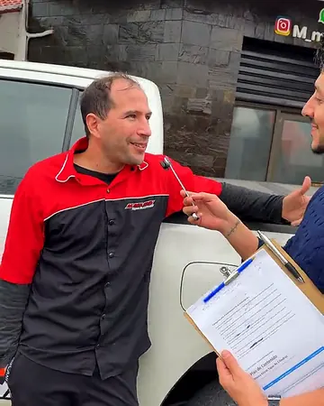
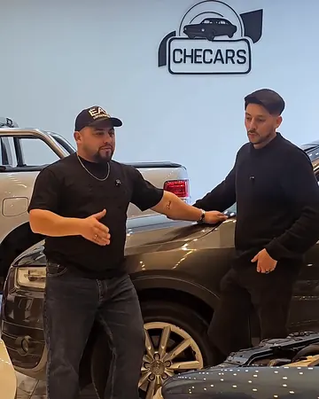
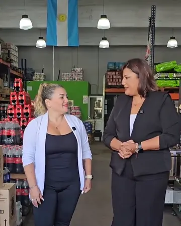
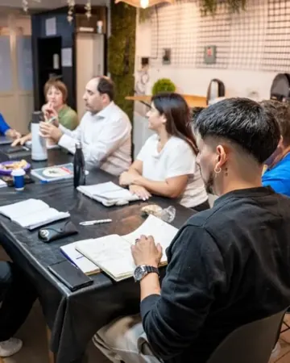
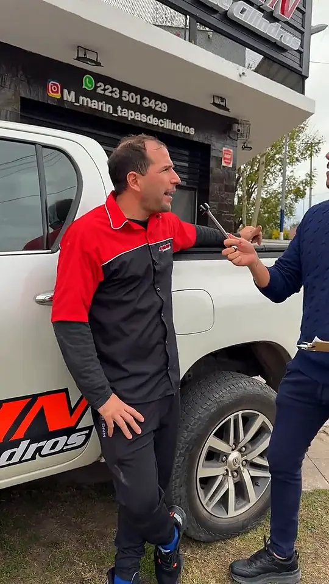
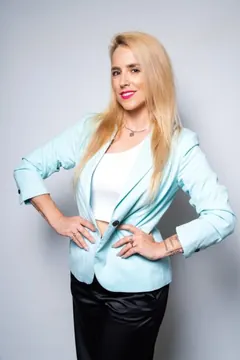
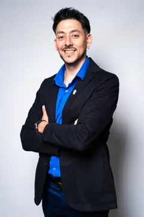
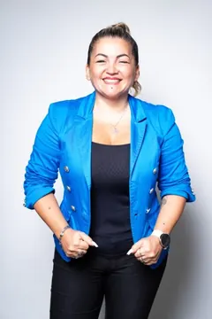

Diagnóstico sin cargo
Encontrá qué frena tu negocio y por dónde empezar Vendés. Ahora sabé cuánto te queda Si mañana no venís, ¿qué se frena primero? Cuatro dueños, ocho semanas, una mesa
Una conversación con alguien de nuestro equipo, para dueños de negocios de 2 a 30 personas.
Ordenamos con vos los números del negocio: cuánto ganás, a dónde se va la plata y cuál es tu sueldo.
Armamos con vos encargados, procesos y acuerdos claros, para que el negocio siga andando cuando no estás.
El P·A·C es un programa grupal: mandos y delegación, caja y márgenes, ventas y canales, y escala. Online o presencial en Mar del Plata.
Por WhatsApp. Te responde una persona del equipo.
+10años acompañando dueños
+100negocios acompañados




Qué pasa después de tocar el botón
-
Se abre WhatsApp con tu mensaje
Lo mandás y te responde una persona del equipo, no un bot.
-
Coordinamos la conversación
Por videollamada o en nuestra oficina de Mar del Plata, cuando te quede cómodo.
-
Te vas con el freno identificado
Y con el primer paso para destrabarlo. Si tiene sentido seguir, te pasamos una Propuesta de Acompañamiento con acuerdos claros.
Negocios como el tuyo, con sus números
3 a 4 horas por díarecuperó el dueño de una distribuidora familiar. Los precios los define una administrativa, con márgenes escritos.
27 trabajos por mesnecesita una rectificadora para no perder plata. El dueño lo sabe, cobra sueldo fijo y armó un fondo de emergencia de 3 meses.
2 semanas de vacacionesse tomó el dueño de una concesionaria. La administración siguió funcionando.

“El taller tiene su plata. Yo pensaba que era mía.”
Te responde alguien de este equipo
Más de 10 años acompañando dueños desde Mar del Plata.

Antonela Dello RussoFinanzas, KPIs y área comercial
Martín TroncosoEquipos y delegación
Vanesa ChiesaEstructura y organización
¿Tiene costo?
No. La conversación de diagnóstico es sin cargo.
¿Y si no es para mí?
Si no te sirve lo que hacemos, te lo decimos. Igual te llevás claro dónde está el freno.
¿Es solo para Mar del Plata?
No. Acompañamos negocios de Argentina y del resto de Latinoamérica por videollamada.